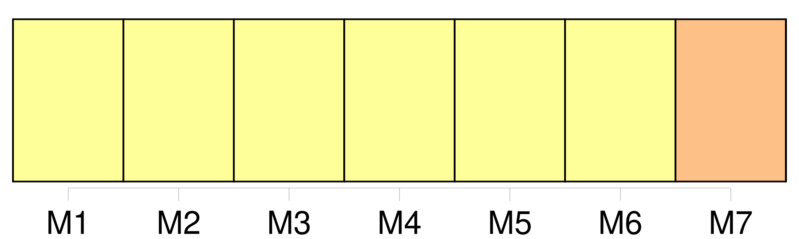
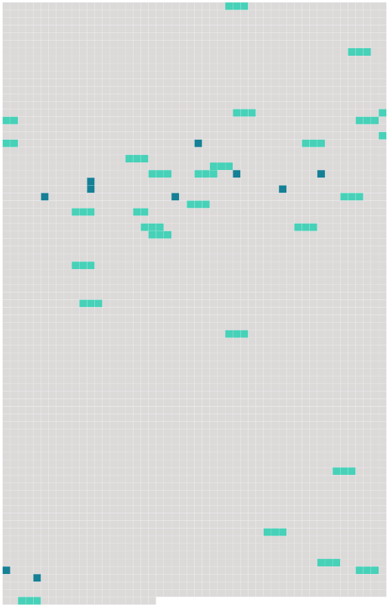

Longueur nb maillons : 36 mentions |
  |
CHAPITRE II [12 phrases]
Statuant à l'unanimité, le conseil supérieur [13 phrases]
Il établit le projet de budget annuel et le projet de prévisions financières triennales et les présente au conseil supérieur après consultation [du conseil académique]
Il nomme les chefs de départements et les membres du corps enseignant, désignés par [le conseil académique] conformément à l'article 9 paragraphe 5 sous d ). [2 phrases]
Le président de l'Institut est choisi par le conseil supérieur, sur une liste de trois noms proposés par [le conseil académique] [9 phrases]
[Le conseil académique] possède une compétence générale en matière de recherche et d'enseignement, sans préjudice des compétences des autres organes de l'Institut.
[Il] est présidé par le président de l'Institut. [1 phrases]
Sont membres [du conseil académique] : [1 phrases]
Le conseil supérieur peut inviter à participer aux activités [du conseil académique] , dans les conditions qu'il détermine, des personnalités ressortissantes des Etats contractants et appartenant aux différentes catégories de la vie économique, sociale et culturelle, désignées en raison de leurs compétences. [1 phrases]
Les dispositions réglementaires prévues à l'article 6 paragraphe 5 sous a ) déterminent : [1 phrases]
[Le conseil académique] [1 phrases]
[Le conseil académique] peut prendre l'initiative de soumettre au conseil supérieur des propositions concernant les questions qui relèvent de la compétence de ce conseil. [1 phrases] Un bureau [du conseil académique] , présidé par le président de l'Institut, assisté du secrétaire général et composé du président et des chefs de départements, exerce les tâches particulières qui lui sont confiées par [le conseil académique]
Il rend compte à [celui -ci] des conditions dans lesquelles il a exercé ces tâches. [4 phrases] Le conseil supérieur, statuant à l'unanimité, peut, après consultation [du conseil académique] et compte tenu de l'expérience acquise, modifier cette répartition ou créer de nouveaux départements.
[Le conseil académique] peut formuler des recommandations à cet effet. [1 phrases]
Dans le cadre des moyens qui lui sont ouverts par le budget ainsi que des programmes arrêtés par [le conseil académique] , le département dispose d'une large autonomie dans l'exécution des travaux d'étude et de recherche qui lui incombent et est doté du personnel nécessaire à son fonctionnement. [7 phrases]
Le sujet des travaux à effectuer par chaque séminaire et équipe de recherche est porté à la connaissance [du conseil académique] par les chefs de départements après concertation avec les professeurs et les assistants. [12 phrases]
Les conditions de délivrance du titre et du certificat prévus au présent article sont déterminées par [le conseil académique] ; ces conditions requièrent l'approbation du conseil supérieur. [12 phrases]
Des ressortissants d'autres Etats peuvent être admis dans les limites et conditions fixées par les dispositions réglementaires arrêtées par le conseil supérieur après consultation [du conseil académique] [47 phrases]
Le président établit un projet de previsions financières triennales et, après consultation [du conseil académique] , les soumet au conseil supérieur pour examen et appréciation. [18 phrases]
[Le conseil académique] peut admettre une exception pour les spécialistes appeles à participer à des travaux determinés de l'Institut. [8 phrases]
[Le conseil supérieur] conclut l'accord de siège et [met] en place les autres organes prévus dans la convention. [2 phrases]
[Le Conseil académique] peut valablement délibérer dès qu' [il] est composé du président, du secrétaire général et de ces huit enseignants. [5 phrases]
Article 33 |
 |
La ressource peut être téléchargée sur la page Ortolang
Si vous avez des questions ou vous voyez des erreurs, merci d'envoyer un mail à silvia.federzoni89@gmail.com
Site développé par S. Federzoni (contact)